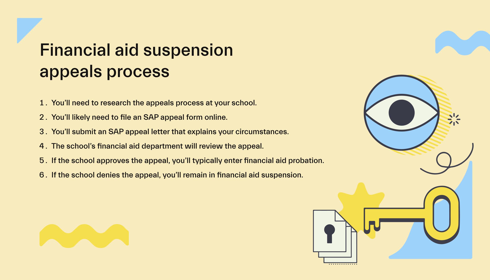
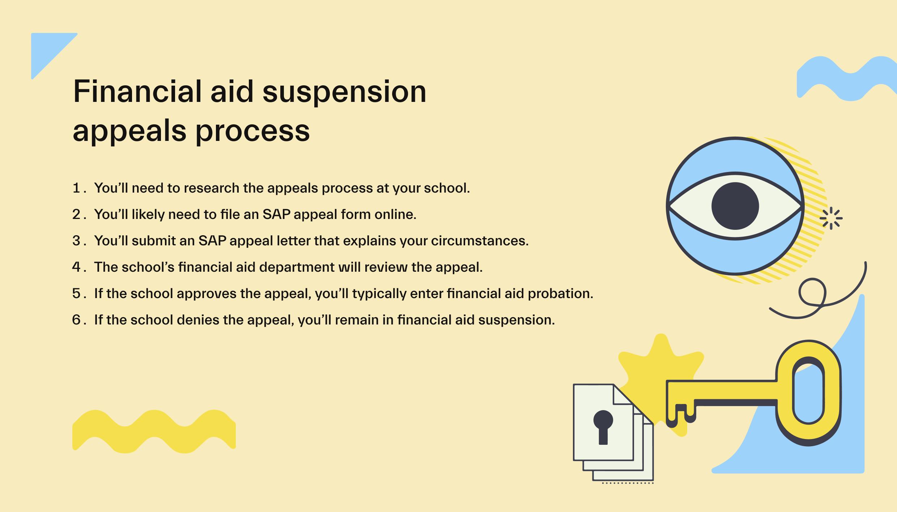
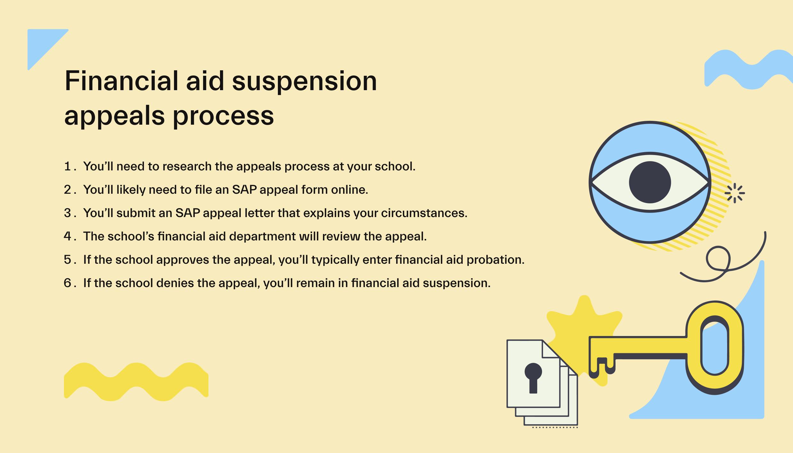

Seven Manshardt
Currently, my major is undeclared, I am however, working towards the Sociology/Administration Major. From my work experience at school, and not, I have found that I do well in the Human Resources departments. I worked with the Library Administration as well as their HR here at UCR, as well as the Graduate Admissions this year. I found that I love to work jobs such as these as they give me a sense of stability that other subjects and occupations do not. As well, in my life I have always been a mediator, whether that be with friends, family, customers, or coworkers. Conflict resolution is something I have excelled at since I was a child. Fundamentally, an effective conflict resolution acknowledges all perspectives, while finding a compromise that tries to benefit all parties.
One of my first jobs helped me to discover my love of an office space. A company I worked at, named London Boat Rentals helped me to see how effective I can really feel communicating and helping others through email and other computer based communications. As well, these communications in person also helped me to realize my passion for office work. I find I work my best at a desk to myself, I can really center and focus my energy on the tasks at hand.
At the core of HR there is the responsibility of creating a positive work environment, ensuring the following of regulations, and the ability to create healthy work relationships without crossing into personal lives. Each day creates an opportunity to engage with coworkers at whichever stage of their career they are at, whether it's conducting interviews, hosting training sessions, or addressing grievances to instill a healthy workplace. While working with other departments, HR sets its focus on maintaining business objectives, ensuring that employees remain as strategic as can be. If I could be honest, this is exactly what I see for myself in my life for the next 20 years or so.
Overall, working in HR within an office setting offers a fulfilling professional experience ensuring that employees have continuous learning, meaningful interactions, and the opportunity to make an impact on both individuals and the workplace as a whole. HR professionals must have an eye out for detail and an understanding of legal and regulatory practices concerning employment practices. Whether it's abiding by labor laws, administering benefits packages, or conducting disciplinary procedures, adherence to compliance standards is imperative to minimize risks and uphold the integrity of the organization. All of these aspects put together are many of the reasons why I would love to spend my career in this position.
Experience
Graduate Admission Student Assistant
• Technical processing; working within application system assigning SIDs; applying fee waivers; etc.
• Use of many technical systems: Microsoft Office and entrails, Slate, UC Banner system
• Scanning and uploading official documents to application system
• Answering all emails and mail daily, doing research for in-depth help for students
Library Administration Student Assistant
• Completed clerical tasks such as filing, copying, and distributing mail.
• Interacted with customers by phone, email, or in person to provide information.
• Assisted coworkers and staff members with special tasks on a daily basis.
• Assisted HR in data entry and other clerical tasks.
Office Staff
• Answering customers through phone, email, and in-person; providing pleasant customer service
in any way within slow or fast-paced scenarios
• Scheduling and editing reservations per customer necessity; filing and filling out all paperwork
necessary
• Selling food, drink, and merchandise
• All opening and closing duties
Education
UC Riverside
Woodrow Wilson High School
Portfolio
 

